El guante brilla. El hombre se esconde. Un biopic espectacular en la forma, valiente a medias en el fondo.
Storybook Nº017PelículaCines20268,0/10
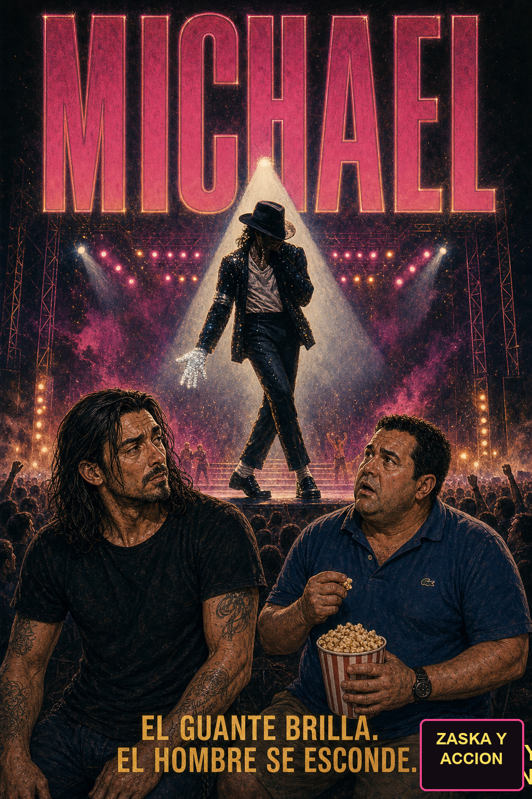
Crítica seria
Antoine Fuqua se enfrenta al biopic imposible: contar a la figura más idolatrada y más cuestionada de la música pop del siglo XX sin que el resultado sea ni hagiografía ni linchamiento. 'Michael' acierta de pleno en lo formal — Jaafar Jackson, sobrino del propio Michael, no imita: encarna. El cuerpo, el gesto, la voz, el magnetismo imposible sobre el escenario. Las recreaciones de los videoclips de Thriller y Beat It están reconstruidas plano a plano con una devoción de archivo que pone la piel de gallina. Y Colman Domingo, como Joe Jackson, sostiene la única herida verdadera de la película: la fábrica de talento montada sobre el miedo de un niño. Donde la película tiembla es en el fondo: se detiene justo cuando la historia se vuelve incómoda, esquiva al Michael adulto y oscuro, y prefiere el homenaje al retrato. Espectacular en la superficie, valiente solo a medias por debajo. Una primera parte magnífica de una historia que aún no se ha atrevido a contarse entera.
Escena 1 - La entrada
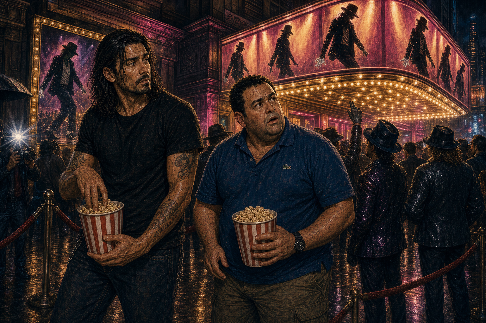
RULO"Toni. El biopic de Michael Jackson. Vamos a ver si tienen huevos a contarlo TODO."
TONI"¿Todo todo? ¿O todo menos lo que tú y yo estamos pensando?"
RULO"Esa, amigo mío, es la pregunta de los dos mil millones de dólares."
Escena 2 - Gary, Indiana
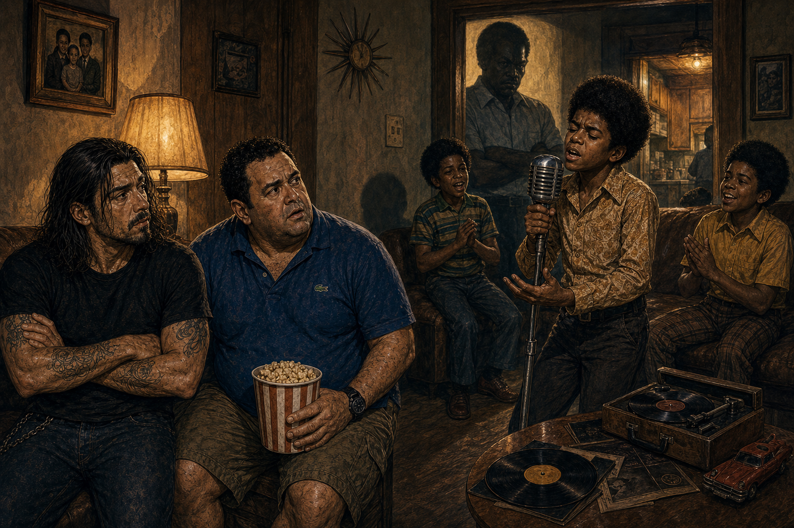
TONI"El niño canta como los ángeles y el padre tiene cara de cobrador del frac."
RULO"Joe Jackson. La fábrica de talento montada sobre el miedo. Aquí empieza todo lo bueno y todo lo roto."
TONI"Yo a ese padre ya le tengo manía y llevamos diez minutos."
Escena 3 - El padre-fábrica
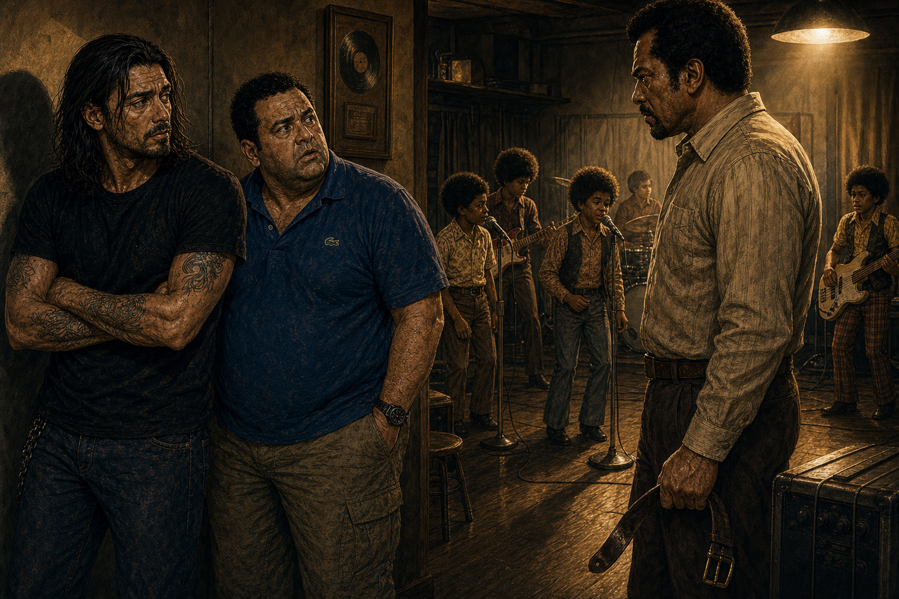
RULO"Colman Domingo. Fíjate. No hace de villano de dibujos. Hace de padre que cree que el miedo es amor. Eso da más miedo."
TONI"Es el típico que te diría 'esto me duele más a mí que a ti'."
RULO"Y se lo creía. Eso es lo peor."
Escena 4 - Motown
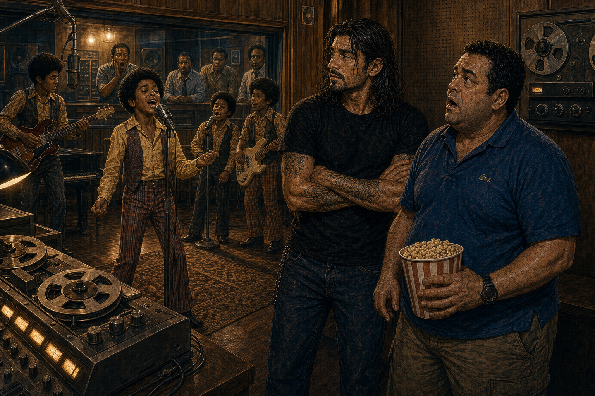
TONI"Vale, el crío con cinco años canta mejor que yo con cuarenta y dos."
RULO"Jaafar Jackson. El sobrino. No imita a Michael... ES Michael. Mira cómo se mueve. Da escalofríos."
TONI"Acojona y emociona a la vez, como las pelis buenas."
Escena 5 - El videoclip
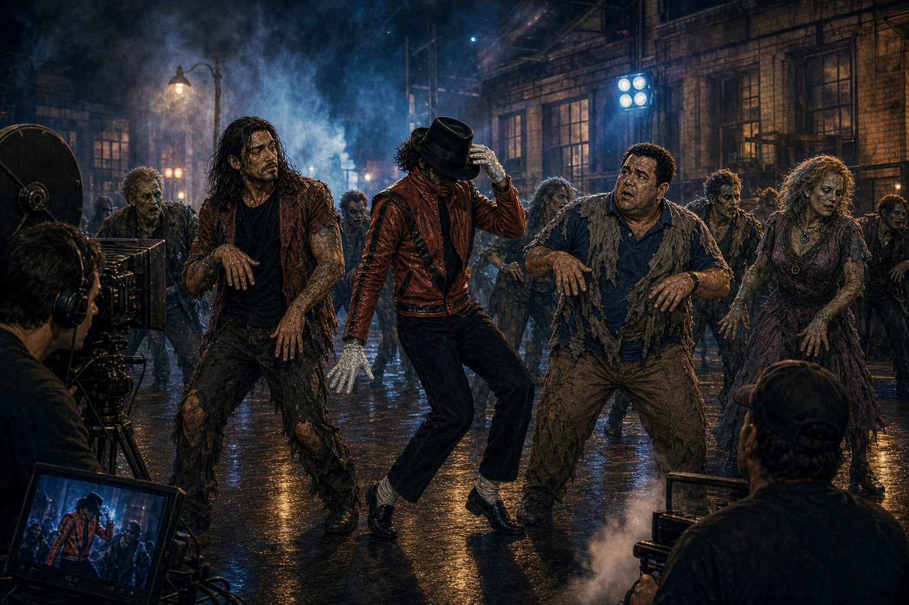
TONI"Rulo, estamos de zombis en Thriller. ¡ESTO es una peli!"
RULO"Recreado plano a plano. Devoción de arqueólogo. Cuando suena, se te pone la piel de gallina."
TONI"¡Que no me sale el paso, joder!"
¡EL GUANTE BRILLA!
Escena 6 - El mito sobre el escenario
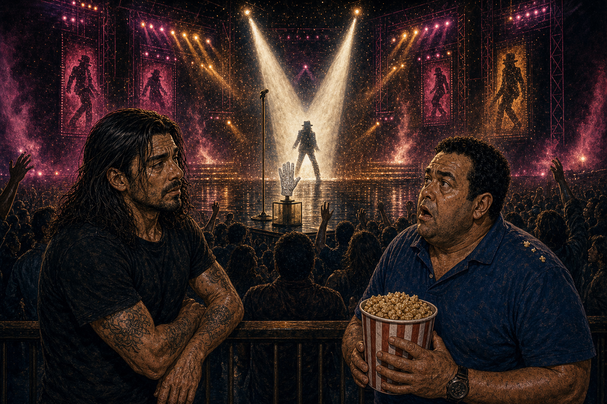
RULO"El moonwalk en el Motown 25. El momento en que un hombre se convierte en leyenda en directo."
TONI"La música no se escucha, Rulo. Te EMPUJA. Te arrastra físicamente."
RULO"Eso es lo que la película clava: el dios sobre el escenario."
Escena 7 - La puerta que no se abre
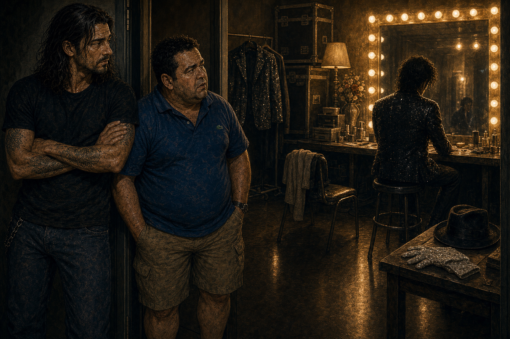
TONI"Y aquí... ¿aquí qué? ¿Quién es el tío cuando se apagan los focos?"
RULO"Ahí está el problema, Toni. La película llama a esa puerta..."
RULO"...y se da la vuelta sin abrirla."
Escena 8 - El agujero en el centro
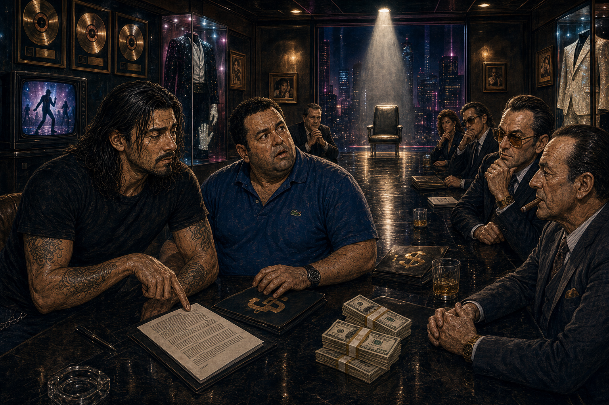
RULO"Aquí podían haber contado al hombre real. El raro, el genio, el incomprendido, el de los titulares."
TONI"¿Y qué hacen?"
RULO"Poner otra canción buenísima y mirar para otro lado."
Escena 9 - Matrícula de honor
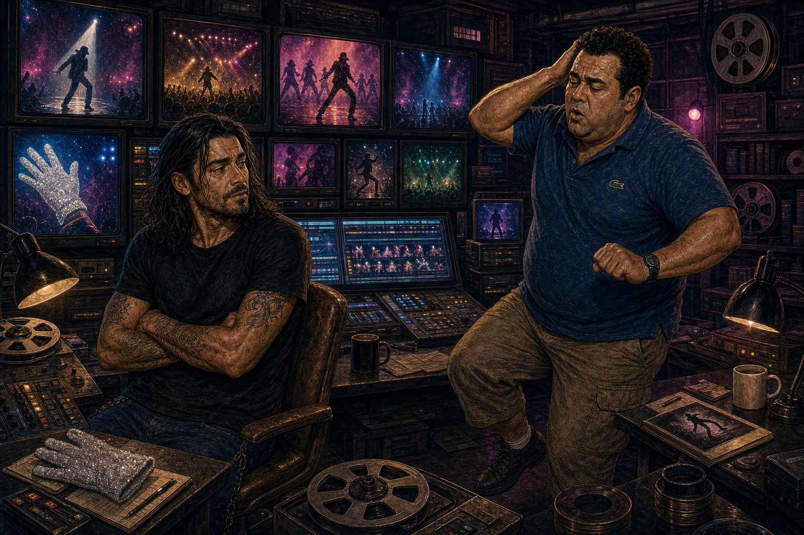
TONI"Vale, me rindo. Como espectáculo es de matrícula de honor."
RULO"Como espectáculo, diez. Como retrato... un notable raspado que no se atreve."
TONI"O sea, lo de siempre con Michael: brillante por fuera."
Escena 10 - Continuará
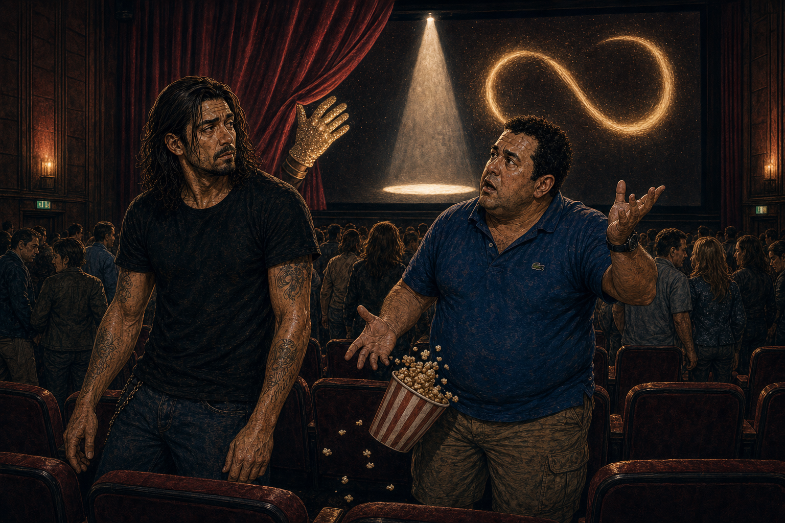
TONI"¿CONTINUARÁ? ¡¿Me dejas a medias como las pelis de acción ochenteras del videoclub?!"
RULO"Bienvenido al truco más viejo: te dan el baile, te quitan el final."
TONI"Pues como me hagan pagar otra entrada para ver LO OTRO, me da algo."
EL GUANTE BRILLA. EL HOMBRE SE ESCONDE.
Escena 11 - Salida del cine
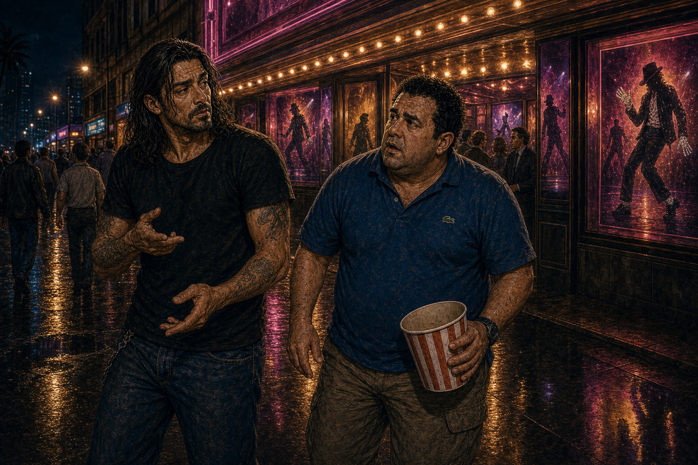
RULO"Jaafar es de otro planeta. El padre, brutal. Thriller, escalofriante. Todo eso es verdad."
TONI"Pero te han traído al Rey del Pop bailando como los ángeles..."
RULO"...y no te han traído al hombre. Eso lo dejaron para la segunda parte."
Escena 12 - El remate
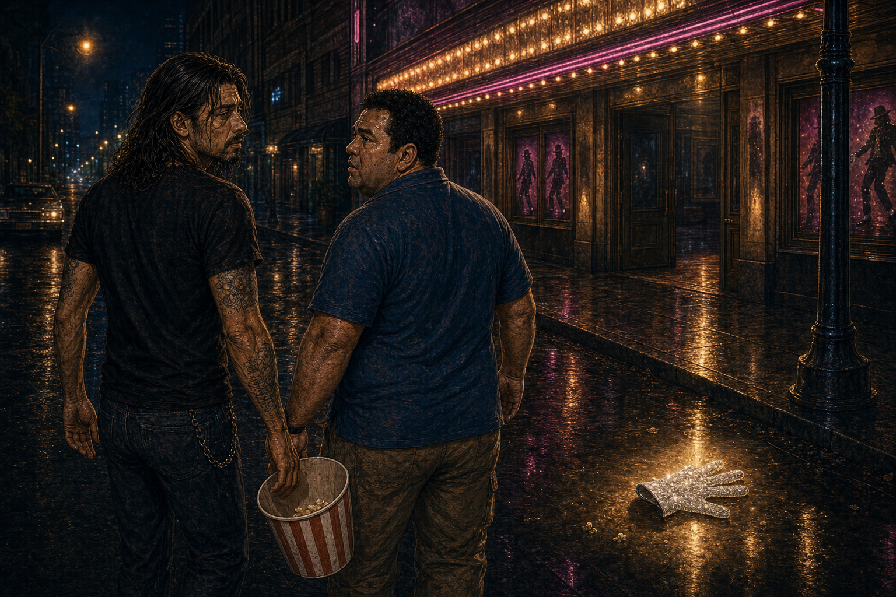
TONI"Entonces, ¿la vemos? ¿La recomendamos?"
RULO"La ves por Jaafar y por la música. Y sales con la misma sensación que con Michael en vida."
TONI"¿Cuál?"
RULO"Que viste al mito de cerca... y al hombre nunca."
Veredicto de Rulo y Toni
8,0
EL GUANTE BRILLA, EL HOMBRE SE ESCONDE
Jaafar Jackson es Michael en cuerpo y alma, las recreaciones de Thriller te arrastran físicamente y el retrato del padre maltratador duele de verdad. Pero la película se queda corta justo cuando se ponía interesante: mucho homenaje, poco hombre. Espectacular en la forma, valiente a medias en el fondo. El Rey del Pop merece una segunda parte que tenga los huevos que esta no tuvo.
La interpretación del protagonista es de nivel diez, parece Michael en cuerpo y alma. La película recorre la infancia y la relación con el padre maltratador con honestidad, que es donde más duele y donde más acierta. Las recreaciones de los videoclips de Thriller son extraordinarias. La música te arrastra físicamente. El problema es que se queda cortada justo cuando más interesante se iba a poner. Un 8 justo: espectacular en la forma, valiente a medias en el fondo.
Crítica canalla
Hay biopics que te cuentan una vida. Y hay biopics que te venden una entrada al concierto y te echan justo antes de los bises. Michael es de los segundos. Y duele, porque durante hora y media te tiene a huevo de ser la mejor película de música desde Amadeus.
Vamos por partes, que esto da para rato.
Hacer el biopic de Michael Jackson es como hacer la peli de Maradona o la de Mike Tyson: sabes que vas a llenar el cine, sabes que la mitad de la sala viene por la música y sabes que la OTRA mitad viene a ver si te atreves a contar LO OTRO. Y ahí está la trampa. Porque Antoine Fuqua —el de Training Day, el tío que sabe rodar tensión— sabe perfectamente dónde están las minas. Lo que pasa es que decide pasar de puntillas por encima de todas. Te trae la chaqueta de cuero roja, el guante, el sombrero, el moonwalk clavado al milímetro... y cuando la cosa se va a poner fea, mira para otro lado y sube el volumen.
Pero empecemos por lo bueno, que lo hay y es mucho.
Jaafar Jackson. Apúntate ese nombre. El sobrino de Michael. Y no te voy a decir que lo imita, porque imitar lo hace cualquier humorista de after en Las Vegas. Este chaval no imita: lo resucita. El cuerpo, los hombros, esa forma de quedarse quieto un segundo antes de explotar en movimiento. Cuando se desliza por el plató haciendo el Billie Jean, a mí se me puso la piel como cuando tenía quince años y metía la cinta de Thriller en el vídeo a las tantas de la noche, con la casa a oscuras, y me daba un poco de cosa pero no podía parar. Eso. Esa sensación. La peli te la devuelve entera.
—Espera, Rulo —que me dice Toni—, ¿pero el crío vale o no vale?
Vale tanto que te olvidas de que estás viendo a un actor. Y eso, en un biopic de alguien con la cara más famosa del planeta, es un milagro. Punto para Fuqua. El casting del año.
Y luego está el otro. Colman Domingo haciendo de Joe Jackson. Madre mía con Colman Domingo. Porque aquí es donde la película, por un rato, tiene huevos de verdad. Joe Jackson no es el villano de dibujos animados, no es Skeletor con bigote. Es algo mucho peor: es el padre que está convencido de que el miedo es una forma de amor. El tío que monta una fábrica de talento en el salón de su casa de Gary, Indiana, y la alimenta con terror. Colman Domingo lo borda porque no lo juzga: lo entiende. Te hace ver al hombre que de verdad creía que pegar a sus hijos los estaba salvando de la pobreza. Y eso, amigo, da más miedo que cualquier monstruo de la Universal, porque ese monstruo era de tu casa. Como el padre de El Resplandor pero sin hacha, solo con un cinturón y una ambición del tamaño de un estadio.
Las recreaciones musicales son de matrícula de honor. Thriller reconstruido plano a plano, con los zombis, la niebla, la chaqueta. Beat It. Smooth Criminal con la inclinación imposible. El Motown 25 donde el moonwalk convierte a un hombre en leyenda EN DIRECTO, delante de millones de personas, en treinta segundos que cambiaron la música para siempre. Cuando suena la música, la película no se escucha: te empuja. Te arrastra físicamente fuera de la butaca. Y ahí Fuqua demuestra que sabe lo que hace.
Entonces, ¿cuál es el problema? Que la película es un concierto cojonudo con un agujero en el centro donde debería estar el hombre.
Porque aquí viene el truco más viejo del cine, el mismo que te hacían las pelis de acción de los ochenta que alquilabas en el videoclub y que acababan justo en lo mejor con un rótulo de "CONTINUARÁ" que te dejaba con el cabreo metido en el cuerpo todo el fin de semana. Michael te lleva hasta el momento Thriller, hasta la cumbre, hasta el dios sobre el escenario... y baja el telón. Se acabó. ¿Y el Michael adulto? ¿El raro? ¿El de Neverland, el de los titulares, el de las acusaciones, el hombre roto que se medicaba para dormir y que murió a los cincuenta pareciendo un fantasma de sí mismo? Ese no sale. Ese lo dejan para la segunda parte, como si la vida de un tío así se pudiera partir en dos como un VHS y vender por entregas.
Hay una escena —la mejor de toda la película— en la que Michael, agotado después de un concierto descomunal, se queda solo en el camerino frente a un espejo lleno de bombillas. De espaldas. Y por un segundo, UN segundo, la cámara duda. Parece que va a entrar ahí, a abrir esa puerta, a enseñarte quién es el tío cuando se apagan los focos y se queda solo con su infancia robada y su cara cambiada.
—¿Y qué hace? —pregunta Toni, que ya lo veía venir.
Se da la vuelta. Llama a la puerta y no la abre. Pone otra canción buenísima y a correr.
Y eso es lo que más rabia da, porque la película DEMUESTRA que sabía dónde estaba la herida. La toca con la infancia y con Joe Jackson. Sabe encontrarla. Pero cuando llega el Michael adulto, el complicado, el incómodo, el que de verdad necesitaba una peli valiente, Fuqua se pone el guante brillante y hace mutis por el foro. Demasiado homenaje. Demasiado respeto. Demasiado miedo a tocar al mito de verdad. Es como si te invitaran a cenar a casa del Padrino y te sacaran solo el antipasto: riquísimo, pero te quedas con hambre de lo gordo.
Te han traído al Rey del Pop bailando como los ángeles, con un actor sobrenatural y una banda sonora que es la mejor de la historia de la música popular. Eso no te lo quita nadie y vale la entrada con creces. Pero al hombre, al de carne y hueso, al genio jodido que había detrás del guante, no te lo han traído. Lo han dejado fuera, en el aparcamiento, esperando una segunda parte que ojalá tenga los huevos que a esta le faltaron.
Velo. Por Jaafar, por Colman Domingo, por Thriller en pantalla grande. Pero sal preparado para lo mismo que sentías con Michael en vida: que has visto al mito de cerca... y al hombre, nunca. El guante brilla. El hombre se esconde. 8.
Personajes
Actor
Personaje
En una línea
Jaafar Jackson
Michael Jackson
El sobrino que no imita: encarna. La interpretación que sostiene la película.
Colman Domingo
Joe Jackson
El padre-fábrica. El miedo disfrazado de disciplina. La herida real del biopic.
(reparto)
Familia Jackson
El coro de Gary, Indiana: talento criado a presión.